Vân Đồn 1149 · Bắc Hải Đảo 1780Vân Đồn 1149 · Bắc Hải Đảo 1780
Characters & clay figures of the history gamesThư viện nhân vật 3D & tượng thủ công Sử Việt
Everyone you meet in the games, in one place: the four 3D captains of Bắc Hải Đảo, the clay figures of the Vân Đồn trading port under the Lý dynasty, and workshop dioramas of the people who made the port run.Mọi nhân vật trong các trò chơi, gom về một chỗ: bốn thuyền trưởng 3D của Bắc Hải Đảo, những bức tượng đất nặn ở thương cảng Vân Đồn thời Lý, và các sa bàn làng nghề kể về những người làm nên bến cảng.
1780 · Gulf of Tonkin · fiction1780 · Vịnh Bắc Bộ · hư cấu
The four captains of Bắc Hải ĐảoBốn thuyền trưởng Bắc Hải Đảo
Cinematic 3D portraits. Bắc Hải Đảo is a work of fiction set in 1780: the captains are invented characters, not historical figures.Chân dung 3D điện ảnh. Bắc Hải Đảo là truyện hư cấu đặt vào năm 1780: các thuyền trưởng là nhân vật sáng tác, không phải nhân vật lịch sử.
-
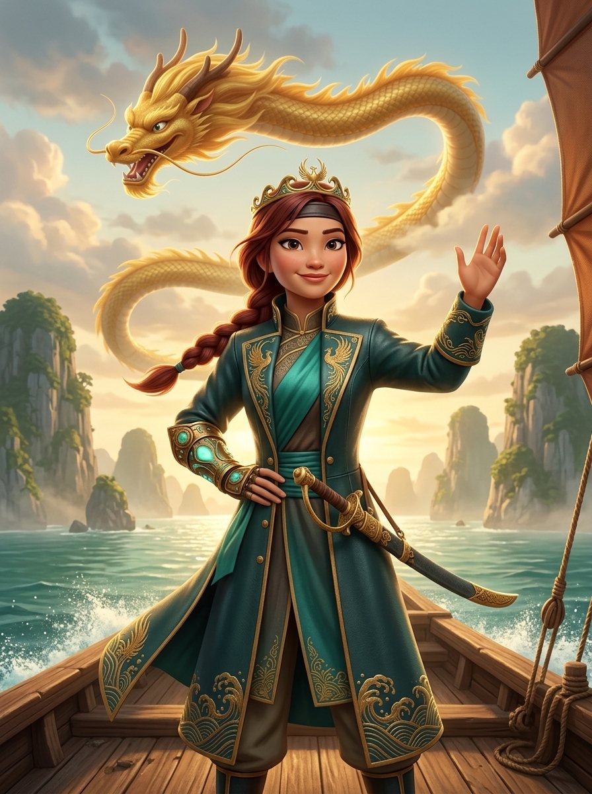
Bắc Hải Đảo · 1780Bắc Hải Đảo · 1780
Admiral T'HươngĐô đốc T'Hương
Phoenix Fire of the North SeaPhượng Hỏa Bắc Hải
Admiral of the Vietnam Tech Pirates crew; her mechanical gauntlet commands a whole battery of cannon.Nữ đô đốc hội Vietnam Tech Pirates, găng tay cơ khí điều khiển cả dàn thần công.
Play Bắc Hải ĐảoChơi Bắc Hải Đảo -
Bắc Hải Đảo · 1780Bắc Hải Đảo · 1780
Trader Trần Vân ĐồnLái buôn Trần Vân Đồn
Abacus of the Old PortThần Toán Bến Cổ
The famous abacus of the old port: knows the price of every harbour by heart and haggles sharp as a betel knife.Tay bàn tính trứ danh đất bến cổ, thuộc lòng giá cả mọi thương cảng, mặc cả sắc như dao cau.
Play Bắc Hải ĐảoChơi Bắc Hải Đảo -
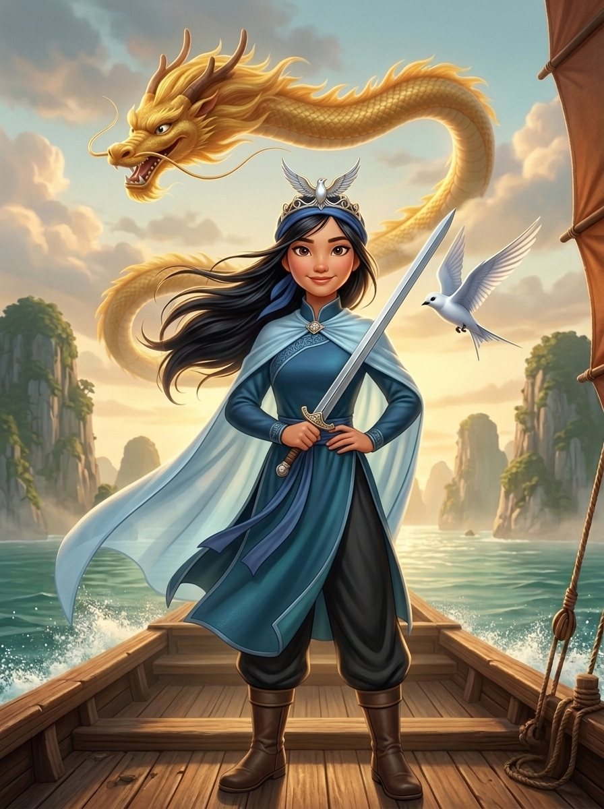
Bắc Hải Đảo · 1780Bắc Hải Đảo · 1780
Seagull SwordswomanKiếm khách Hải Âu
Swallow Against the WindCánh Én Ngược Gió
A fishing-village girl from Cát Bà who steers like a swallow darting ahead of a storm.Cô gái làng chài Cát Bà, lái thuyền như én liệng trước giông.
Play Bắc Hải ĐảoChơi Bắc Hải Đảo -
Bắc Hải Đảo · 1780Bắc Hải Đảo · 1780
Mother Tư of Cát HảiBà Tư Cát Hải
Mother of the SeaMẹ Biển Cả
Owner of a fish-sauce works and foster mother to a hundred orphaned sailors.Chủ vựa nước mắm, mẹ nuôi của cả trăm thủy thủ mồ côi.
Play Bắc Hải ĐảoChơi Bắc Hải Đảo
1149 · Lý Anh Tông1149 · Lý Anh Tông
The court and the merchants of Vân ĐồnTriều đình và thương nhân Vân Đồn
Hand-made clay figures with fingerprint texture, as they appear in Vân Đồn 3D.Tượng đất nặn thủ công còn vân tay, đúng như trong Vân Đồn 3D.
In spring of the year Kỷ Tỵ (1149), under King Lý Anh Tông, merchant ships from Java, Lộ Lạc and Siam came to Hải Đông asking to live and trade. The court set up a settlement on the islands, called Vân Đồn.Mùa xuân năm Kỷ Tỵ (1149), đời vua Lý Anh Tông, thuyền buôn Trảo Oa, Lộ Lạc, Xiêm La vào Hải Đông xin cư trú buôn bán. Triều đình cho lập trang ở hải đảo, gọi là Vân Đồn.
After the Complete Annals of Đại Việt (Đại Việt sử ký toàn thư), as retold in Vân Đồn 3DTheo Đại Việt sử ký toàn thư, như kể lại trong Vân Đồn 3D
-
Court & customs · 1149Triều đình & thuế quan · 1149
Royal envoySứ thần triều Lý
Wears a phốc đầu cap and a purple cross-collar robe, holding a decree wrapped in yellow silk. Appears in the chapter of the tribute decree.Đội mũ phốc đầu, mặc áo giao lĩnh màu tía, hai tay nâng cuộn chiếu bọc lụa vàng. Xuất hiện trong chương «Chiếu đòi cống».
Meet them in Vân Đồn 3DGặp trong Vân Đồn 3D -
Court & customs · 1149Triều đình & thuế quan · 1149
Port governorQuan trấn thủ
The role you play in Vân Đồn 3D: walk the quay, buy from the workshops, sell to the merchant ships and set the harbour tax.Vai người chơi trong Vân Đồn 3D: đi lại trên bến, mua hàng ở lò xưởng, bán cho thương thuyền và định mức thuế cảng.
Meet them in Vân Đồn 3DGặp trong Vân Đồn 3D -
Court & customs · 1149Triều đình & thuế quan · 1149
Customs clerkThư lại thuế quan
Keeps the customs house with a brush and wooden tallies.Giữ Nhà thuế quan, cầm bút lông và thẻ gỗ.
Meet them in Vân Đồn 3DGặp trong Vân Đồn 3D -
Overseas merchants · 1149Thương nhân hải ngoại · 1149
Song merchantThương nhân Tống
Round-collared robe, carrying a green-glazed bowl and a roll of silk.Áo cổ tròn, cầm bát men xanh và cuộn lụa.
Meet them in Vân Đồn 3DGặp trong Vân Đồn 3D -
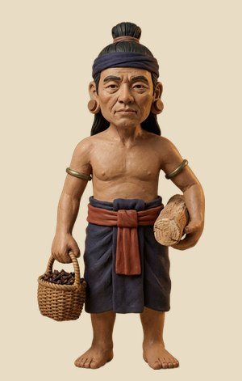
Overseas merchants · 1149Thương nhân hải ngoại · 1149
Javanese merchantThương nhân Trảo Oa
Hair knotted with an indigo band, an indigo wrap, a basket of cloves and a log of sandalwood.Búi tóc quấn dải chàm, quấn vải chàm, xách giỏ đinh hương, ôm khúc đàn hương.
Meet them in Vân Đồn 3DGặp trong Vân Đồn 3D -
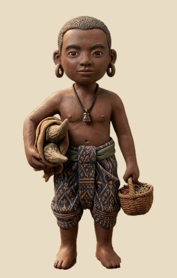
Overseas merchants · 1149Thương nhân hải ngoại · 1149
Siamese merchantThương nhân Xiêm La
Earrings and a sampot wrap, holding a rhinoceros horn.Đeo hoa tai, quấn sampot, cầm sừng tê.
Meet them in Vân Đồn 3DGặp trong Vân Đồn 3D -
Overseas merchants · 1149Thương nhân hải ngoại · 1149
Srivijayan merchantThương nhân Tam Phật Tề
Shoulder-length hair and a red wrap, holding ivory and a bamboo tube of camphor, with a tortoiseshell plate.Tóc ngang vai, quấn vải đỏ, cầm ngà voi và ống tre đựng long não, đeo tấm đồi mồi.
Meet them in Vân Đồn 3DGặp trong Vân Đồn 3D -
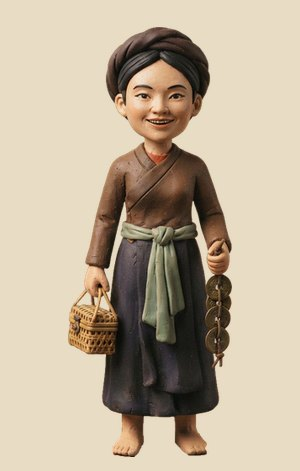
Overseas merchants · 1149Thương nhân hải ngoại · 1149
Merchant ladyNữ thương chủ
A trader of the port in the Vân Đồn games.Người buôn bán trên bến trong các trò chơi Vân Đồn.
Meet them in Vân Đồn 3DGặp trong Vân Đồn 3D
The people who made the port runNhững người làm nên bến cảng
Craftspeople and workshop dioramasThợ thủ công và sa bàn làng nghề
The workshop owners you buy from in Vân Đồn 3D, followed by claymation dioramas of their daily work.Những chủ lò xưởng người chơi mua hàng trong Vân Đồn 3D, rồi đến các sa bàn đất nặn về công việc hằng ngày của họ.
-

Craftspeople · 1149Thợ thủ công · 1149
Master potterThợ cả lò gốm
Hair in a knot, holding a bowl. Sells ceramics at the kiln.Búi tóc, tay bưng bát. Bán gốm ở lò.
Meet them in Vân Đồn 3DGặp trong Vân Đồn 3D -
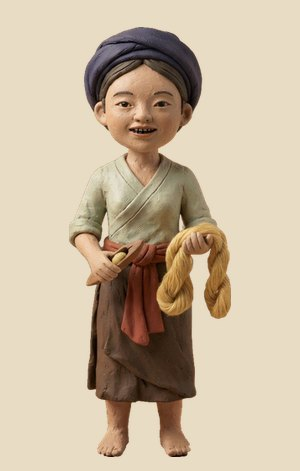
Craftspeople · 1149Thợ thủ công · 1149
Silk workshop ownerBà chủ xưởng dệt
Holds a skein of silk and a weaving shuttle.Cầm con tơ và thoi dệt.
Meet them in Vân Đồn 3DGặp trong Vân Đồn 3D -
Craftspeople · 1149Thợ thủ công · 1149
Agarwood dealerChủ trạm trầm hương
Carries a tray of agarwood, with a bronze scale at the waist.Bưng khay trầm, đeo cân đồng.
Meet them in Vân Đồn 3DGặp trong Vân Đồn 3D -
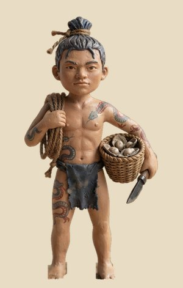
Craftspeople · 1149Thợ thủ công · 1149
Pearl diverThợ lặn mò ngọc trai
Loincloth and tattoos, holding a basket of pearl oysters.Đóng khố, xăm mình, ôm giỏ trai ngọc.
Meet them in Vân Đồn 3DGặp trong Vân Đồn 3D
-
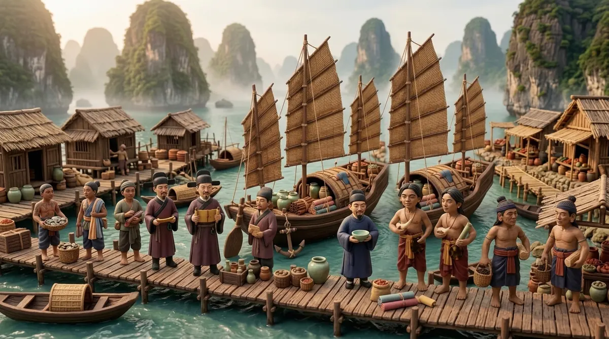
The quay at Vân ĐồnBến Vân Đồn
Junks with batten sails moored along a wooden pier, merchants waiting with their goods.Thuyền buồm cánh dơi neo dọc cầu tàu gỗ, thương nhân đứng chờ cùng hàng hoá.
-
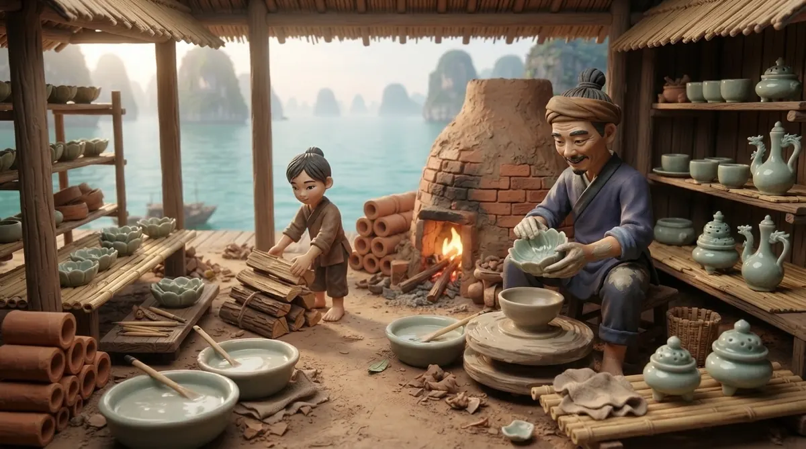
The kilnLò gốm
A potter finishing green-glazed bowls beside a wood-fired kiln.Thợ gốm hoàn thiện bát men xanh bên lò đốt củi.
-
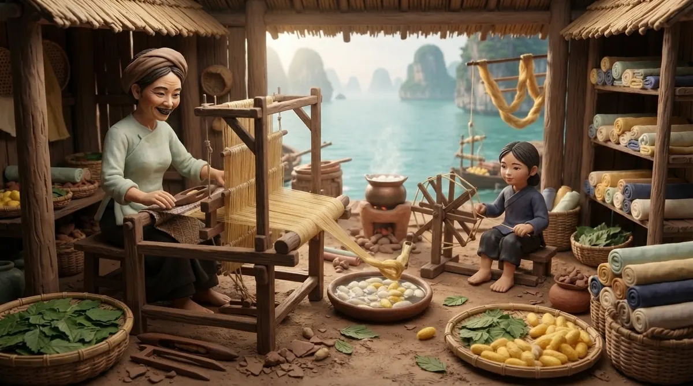
The loomKhung cửi
Weaving silk on a wooden loom by the bay.Dệt lụa trên khung cửi gỗ ven vịnh.
-
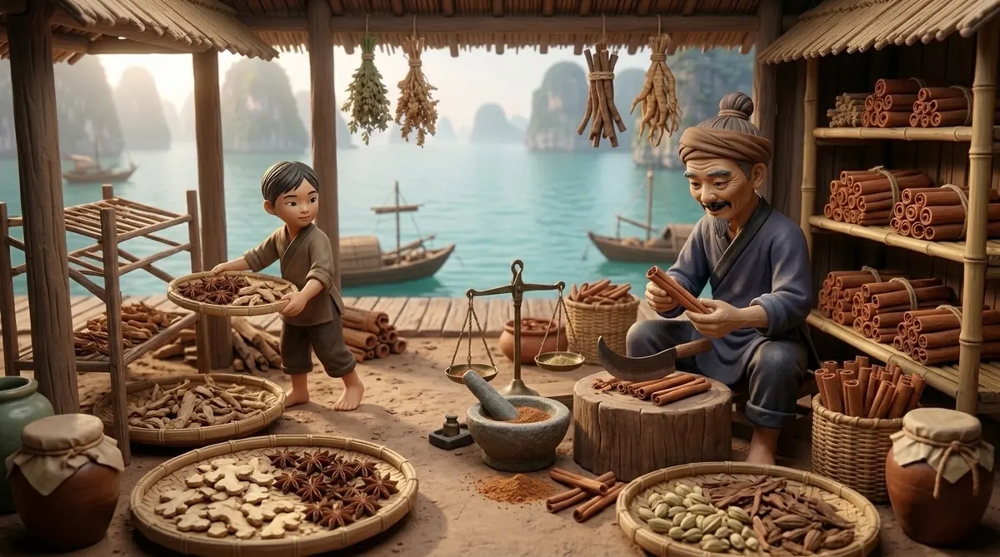
Spices and medicineHàng hương liệu, dược liệu
A stall of cinnamon, herbs and roots for the merchant ships.Sạp quế, thảo dược, rễ cây bán cho thương thuyền.
-
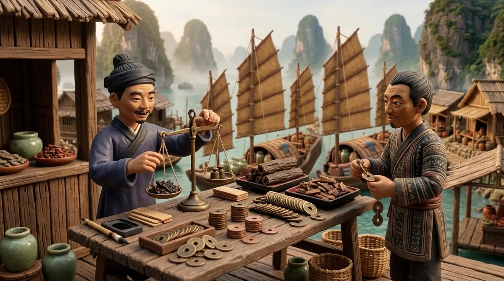
Weighing the tradeCân hàng
Goods and coins weighed on a balance at the water’s edge.Hàng và tiền được cân bên mép nước.
-
Boat marketChợ thuyền
Small boats selling fruit and pottery to the larger ships.Thuyền nhỏ bán hoa quả, đồ gốm cho thuyền lớn.
-
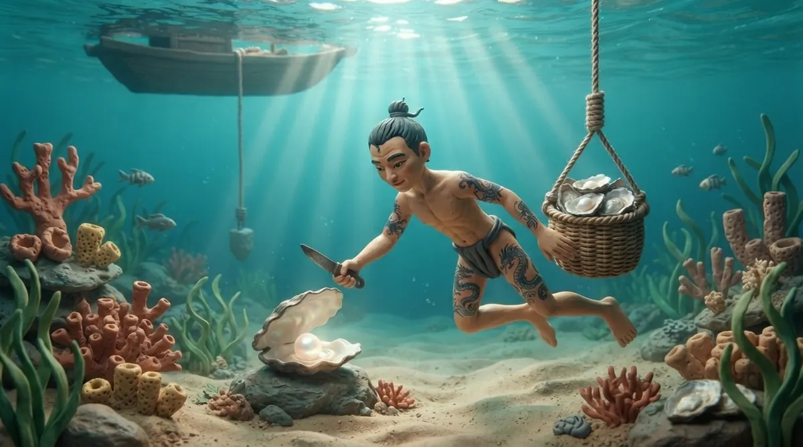
Under the bayDưới đáy vịnh
A pearl diver at work beneath the hulls.Thợ lặn mò ngọc trai dưới đáy thuyền.
-
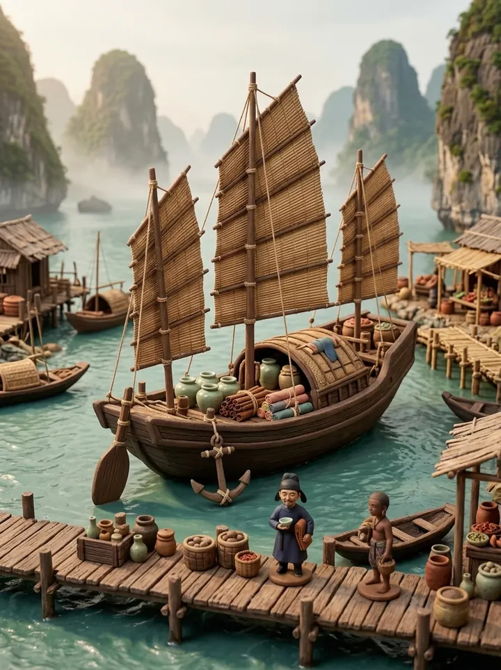
A merchant junkThuyền buôn
A three-masted junk loaded with jars, ready to sail.Thuyền ba buồm chất đầy chum vại, sẵn sàng ra khơi.
About these images.Về các hình ảnh. All figures and dioramas are digital illustrations made for the games, with AI assistance. Costumes and goods follow the period as the games describe it; they are a reconstruction for learning, not museum objects. Bắc Hải Đảo is fiction.Mọi tượng và sa bàn là tranh số làm cho trò chơi, có dùng công cụ AI hỗ trợ. Trang phục và hàng hoá theo niên đại như trò chơi mô tả; đây là hình tái dựng để học, không phải hiện vật bảo tàng. Bắc Hải Đảo là truyện hư cấu.